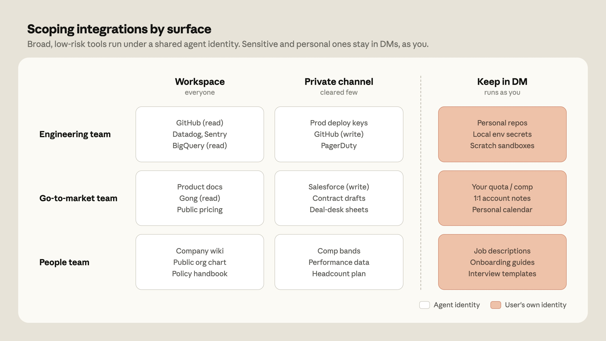

AI 에이전트가 인간-에이전트 팀에서 최고의 성과를 내려면, 인간이 가진 것과 동일한 도구, 문서, 맥락(context)에 접근할 수 있어야 합니다.
"싱글 플레이어" AI 경험(한 사람이 하나의 어시스턴트와 대화하는 경우)에서는 이것이 간단합니다. 자신의 계정을 연결하면 에이전트가 사용자를 대신해 행동합니다. 하지만 Claude Tag처럼 "멀티플레이어" AI 경험에서는 Claude가 여러 사람이 동시에 모인 공유 채널 안에 자리하며, 특정 개인이 아니라 워크스페이스에 속한 도구와 맥락을 끌어다 씁니다.
멀티플레이어 경험이 제대로 작동하려면, Claude는 관리자(admin)가 설정하고 워크스페이스에 묶인, 그 도구들을 위한 자기 자신의 계정이 필요합니다. 우리는 이 접근 모델을 에이전트 아이덴티티(agent identity)라고 부릅니다.
이 글에서는 에이전트 아이덴티티가 어떻게 작동하는지, 권한이 어떻게 사용자별(per-user)에서 채널별(per-channel)로 이동하는지, 그리고 여러분의 워크스페이스에서 이를 어떻게 잘 범위 지정(scope)하는지를 설명합니다.
AI를 개인 비서로 사용할 때는 Google Drive, GitHub, 캘린더 같은 플랫폼을 연결하고, 모델이 그것들을 읽고 쓸 때 여러분의 접근 권한을 사용하도록 둘 수 있습니다.
이 모델은 두 가지 이유로 Claude Tag에서는 통하지 않습니다.
Claude Tag가 활성화된 채널에서 Claude는 단일 사용자를 대신해 행동하지 않습니다. Claude는 자신이 접근하는 각 시스템마다 자기 자신의 계정을 가지고 있습니다. Slack에는 Claude 앱으로 글을 올리고, GitHub에는 Claude GitHub App으로 풀 리퀘스트(pull request)를 열며, 데이터 웨어하우스(warehouse)에는 관리자가 프로비저닝한 서비스 계정(service account)으로 쿼리합니다.
그리고 개인 사용자 자격 증명(credential)이 전혀 개입하지 않기 때문에, 공유 채널이 누군가의 비공개 문서로 통하는 옆문이 되는 일은 결코 없습니다.
에이전트 아이덴티티 모델에서 관리자는 워크스페이스 수준에서 아이덴티티—Claude가 어디서나 보유하는 기본(baseline) 연결과 스킬의 집합—를 정의하고, 모든 채널이 기본적으로 이를 상속합니다. 그런 다음 합리적인 경우에 한해, 채널 수준에서 이를 재정의(override)할 수 있습니다. 예를 들어 엔지니어링 채널에 GitHub과 데이터 웨어하우스 접근 권한을 부여하거나, CRM 연결을 단일 비공개 채널로 한정하는 식입니다.
자격 증명 외에도 관리자는 다음을 정의합니다.
이 모델은 서로 구별되는 Claude 아이덴티티들을 중심으로 작동하기 때문에, 아이덴티티를 철회(revoke)하면 그 아이덴티티가 사용되던 모든 곳에서 Claude의 접근이 끝납니다. 이는 수십 개의 사용자 계정에 걸쳐 개별 에이전트 행위를 감사하는 것보다 관리에 훨씬 적은 노력이 듭니다.
에이전트 아이덴티티는 "이 사용자는 무엇을 할 수 있는가?"라는 질문을 "이 에이전트는 이 구획(compartment) 안에서 무엇을 할 수 있는가?"로 대체합니다. 이는 사용자별 접근 제어 목록(Access Control List)에서 벗어나는 것입니다. 즉, 리포지토리에 직접 접근 권한이 없는 채널 멤버라도, 채널의 프로필이 Claude에게 그 권한을 부여했다면 Claude에게 그 리포지토리를 읽어 달라고 요청할 수 있습니다.
이는 이례적이지만, 우리는 이것이 자율적이고 멀티플레이어인 에이전트에 맞는 접근 모델로 가는 데 필요한 단계라고 생각합니다. 아래에서는 그 경계를 어떻게 설정해야 할지 생각하는 방법을 스케치합니다.
Claude Tag는 각 비공개 채널마다 별개의 아이덴티티를 생성합니다. 워크스페이스 내의 공개 채널들은 워크스페이스 수준의 아이덴티티를 공유합니다. 법무 채널에서의 Claude 아이덴티티는 그곳에 부여되지 않은 코드에 닿을 수 없고, 엔지니어링 채널에서의 아이덴티티는 그곳에 부여되지 않은 법무 문서를 읽을 수 없습니다. 메모리(memory)와 접근은 그 경계를 따릅니다. Claude가 비공개 채널에서 학습한 내용은 더 넓은 워크스페이스에 절대 나타나지 않습니다.
아이덴티티는 채널에 속하므로, 기본적으로 그 안에 있는 누구나 Claude를 태그(tag)할 수 있고, 관리자는 각 채널의 프로필을 가장 권한이 적은 멤버 수준으로 범위 지정할 수 있습니다. 엔터프라이즈(Enterprise) 플랜에서는 역할 기반 접근 제어(role-based access control)를 통해 관리자가 한 걸음 더 나아가 어떤 멤버가 Claude를 호출할 수 있는지까지 결정할 수 있습니다. 그래서 채널은 에이전트가 무엇에 닿을 수 있는지와 누가 요청할 수 있는지를 모두 관장합니다.
Anthropic 내부에서 Claude Tag를 운영해 보니, 그 가치는 도구 및 맥락 접근과 함께 복리로 불어난다는 것을 알게 되었습니다. 연결된 시스템 하나하나가 다른 모든 시스템을 더 유용하게 만듭니다. Claude가 그것들에 걸쳐 맥락을 결합할 수 있기 때문입니다—Slack의 스레드, Drive의 문서, 트래커의 티켓, 웨어하우스의 쿼리를, 어떤 단일 도구로도 만들 수 없는 하나의 답으로 엮어 냅니다.

Claude에서 가장 많은 것을 얻는 팀은 처음부터 넉넉하게 접근 권한을 부여하고, 조직의 관리자 선호에 따라 접근을 줄여 나가는 팀입니다. 에이전트 아이덴티티는 관리자에게 Claude가 시스템을 넘나드는 유용한 작업을 할 만큼 충분히 넓은 범위를 주되, 그 접근이 부여되지 않은 곳으로는 절대 넘어가지 않을 만큼 단단한 경계를 둡니다. 우리의 조언은, 몇 개 채널에서 기본(baseline) 프로필로 시작하고, 감사 추적(audit trail)을 읽어 본 다음, 일이 그것을 정당화하는 곳에서 한 번에 한 건씩 신중하게 접근을 넓혀 가라는 것입니다.
더 세밀한 제어가 필요한 조직이라면, 관리자는 특정 채널에서 Claude Tag를 비활성화할 수 있습니다. 또한 역할 기반 접근 제어(RBAC)를 적용해 Claude Tag 접근을 특정 사용자로 제한할 수도 있습니다.
Claude Tag에서 다이렉트 메시지(DM)는 공유 채널과 다르게 작동합니다. DM은 사용자 개인의 claude.ai 계정—그 사람의 커넥터, 자격 증명, 그리고 결과에 붙는 이름—위에서 실행됩니다. 그래서 DM은 이메일 초안이나 본인만 라이선스를 가진 소프트웨어처럼, 채널에 절대 두어서는 안 되는 작업과 도구로 Claude와 함께 일하기에 알맞은 곳입니다.
관리자가 채널 프로필에 연결을 추가하면, 그 자격 증명은 독립적으로 저장되어 해당 채널의 아이덴티티에 매핑되고, 요청 시점에 네트워크 경계에서 주입됩니다. 관리자가 허용하지 않은 호스트로 나가는 아웃바운드 트래픽은 즉시 차단됩니다. 감사 측면에서는, 에이전트 자격 증명으로 이루어진 모든 루틴, 메모리 쓰기, 네트워크 호출이 기록되며, Claude가 자기 자신의 서비스 계정으로 행동하기 때문에 그 행위들은 연결된 각 시스템의 자체 로그에도 남습니다.
에이전트 아이덴티티는 Claude Tag 접근 모델의 토대입니다. 앞으로 우리는 Claude Tag의 보안 기능을 강화해 적시(just-in-time) 자격 증명 부여—사용자가 에이전트의 범위를 영구히 넓히지 않고도 민감한 단일 행위를 그 순간에 승인할 수 있게 하는 것—와, 더 복잡한 인가(clearance) 구조를 가진 조직을 위한 아이덴티티 인식 오버레이(identity-aware overlay)를 포함시킬 계획입니다. 이는 에이전트의 범위 위에 사용자 수준 검사를 더해, 채널의 프로필과 요청하는 사용자 본인의 권한이 모두 허용할 때만 Claude가 행동하도록 합니다.
Claude Tag 같은 제품에서 싱글 플레이어에서 멀티플레이어 AI로의 전환은 오래 지속되는 팀 기반 작업을 가능하게 합니다. 에이전트 아이덴티티는 Claude의 도구 접근이 유용할 만큼 충분히 넓되, 엔터프라이즈 규모에서 안전할 만큼 충분히 범위가 제한되도록 보장합니다.
이 글은 Claude Code 팀의 기술 스태프(member of technical staff)인 Noah Zweben이 작성했습니다.